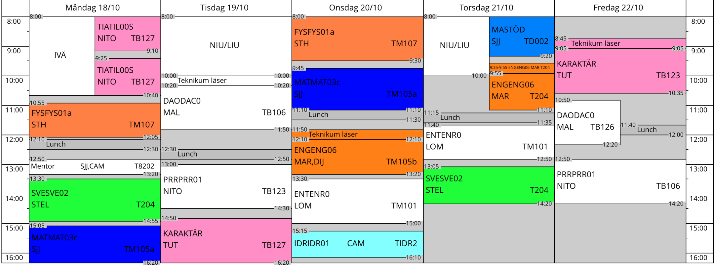

Jag heter Hibba Hindawi och jag är en flicka som är född 2004, 26 Juli. Jag har flera intressen och gillar att göra olika saker som att till exempel bygga saker och att vara kreativ. Jag försöker också göra några projekt med hjälp av mina kunskaper från min nurvarande skola Teknikum
Min dag brukar börja med att jag vaknar och går till skolan i några timmar där jag pluggar teknik. Jag har en specifik schema att följa och specifika ämnen som är tillgänglig till bara min inriktning. Jag gillar mest Webbutveckling och programmering eftersom jag kan vara mest kreativ där.
Mitt schema består utav flera olika lektioner och mycket att göra hemma.
Mitt Schema:
